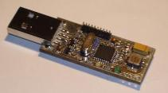
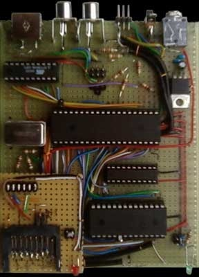
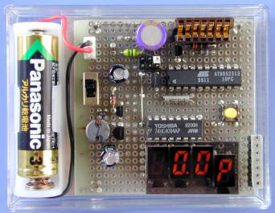

A weblog focused on interesting circuits, ideas, schematics and other information about microelectronics and microcontrollers.
E-books
Disclaimer
Because I have not tested all electronic circuits mentioned on this pages, I cannot attest to their accuracy; therefore, I do not provide a warranty of any kind and cannot be held responsible in any manner.
ATMEL AVR
Visual Algorithm Builder for AVR
5. July 2009 - 10:18 — adminThe Graphics Integrated Development Environment
for AVR microcontrollers.

Portable WinAVR
3. July 2009 - 8:58 — adminAll you need for AVR programming, running directly from USB memory stick.
Wii Motion sensor and Arduino
27. June 2009 - 16:06 — adminHow to read the gyro data from Wii Motion Plus by an Arduino.

Bitlash
25. June 2009 - 18:38 — adminAn open source interpreted language shell for the Arduino serial port.

TiltStick
22. June 2009 - 19:52 — adminA small acceleration sensing device in form of a USB stick.

AVR GameBoy
15. June 2009 - 18:53 — adminA simple handheld game console with two ATtiny26 and LCD graphic display module.

The JTAG Debugger Based on ATmega644
15. June 2009 - 6:36 — adminThis JTAG Debugger from the Cornell university is based on an ATmega644 and it’s capable of controlling program execution by setting breakpoints and accessing registers and memory.

AVR prototype board
7. June 2009 - 14:25 — adminA new prototype board for AVR 28-pin microcontrollers from Protostack.

m64
7. June 2009 - 11:20 — adminA small computer, based on ATMega162, built by C64 lover Andre Klonz.

Digital capacitance meter
4. June 2009 - 17:53 — adminAn older (2003), but still good circuit: Capacitance meter with AVR AT90S2313 by ELM.
